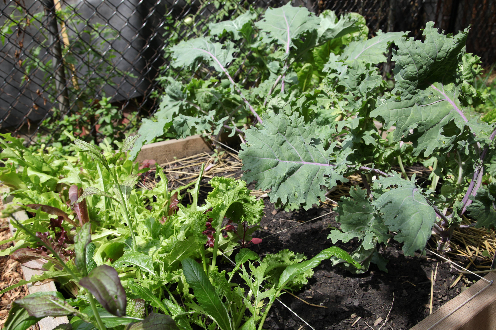

October 24, 2015
I'm Dawn, a grad student interested in building more sustainable and secure systems using participatory techniques. I also love to garden!

Networks can be hard to make sense of because we recognize and engage with few of their tangible objects, let's explore this challenge and think about how the full range of our senses can be used to reveal connections and flows within networks.
Over the next 1.5 hours:
A network is two or more (*) linked together
A network is two or more things linked together to share resources
A mode in which something exists or is experienced
A mode or way in which something is experienced
[The] technology that we depend upon for community and connection is being compromised. The recent accessibility of networking technology... has made it affordable and possible for everyday citizens to learn how to design their own web servers and networks.
Something you want to learn this weekend and something you could teach
The recent accessibility of networking technology... has made it affordable and possible for everyday citizens to learn how to design their own web servers and networks.
We've arrived and been asked (tasked) with evaluating and proposing a way to bring together a network using this floor and building as one anchor in that new system.
By yourself, think back to a network (any network, community, group) you've been a part of.
Wtih a partner, share your answers. What are some points of convergence? difference?
In groups spend 30 minutes:
Questions to ask each other while you're walking:
Write them down!
Presentations can be exported to PDF, below is an example that's been uploaded to SlideShare.
Workshop materials are found atgithub.com/dcwalk/visualizingnetworks
Please let me know what you thought
and feel free to use them!